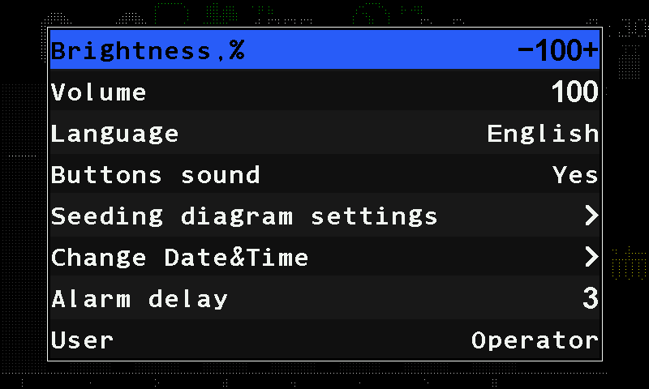

Le menu Settings
Chaque élément du menu « Settings » propre au panneau — luminosité, volume, langue, son des touches, réglages des diagrammes, date et heure, temporisation des alarmes, niveau d'accès — avec sa plage, sa valeur par défaut et son niveau d'accès.
Le menu « Settings » (réglages) regroupe les réglages du panneau lui-même. Ouvrez-le depuis l'écran d'accueil : touchez avec deux doigts, puis touchez « Settings » deux fois. Les réglages des capteurs pris individuellement sont ailleurs — voir Réglages des capteurs.

- « Brightness,% » (luminosité, %) — le rétroéclairage. L'élément sélectionné montre sa valeur entre - et + ; glissez vers la droite ou vers la gauche pour la modifier.
- « Volume » (volume) — le volume du son d'alarme.
- « Language » (langue) — la langue des écrans.
- « Buttons sound » (son des touches) — un clic à chaque toucher pris en compte par l'écran.
- « Seeding diagram settings » (réglages du diagramme de semis) — la façon dont le diagramme des graines est dessiné. Plus bas.
- « Change Date&Time » (modifier la date et l'heure) — l'horloge. Plus bas.
- « Alarm delay » (temporisation des alarmes) — la durée pendant laquelle un défaut doit persister avant l'ouverture de la fenêtre d'alarme.
- « User » (utilisateur) — le niveau d'accès. Niveaux d'accès.
Les éléments
| Élément | Plage et valeur par défaut | Niveau |
|---|---|---|
| « Brightness,% » | 0 … 100, par pas de 10 ; 100 par défaut. 0 est le réglage le plus sombre, pas l'extinction. Voir Luminosité de l'écran. | Operator |
| « Volume » | 0 … 100, par pas de 10 ; 100 par défaut. | Operator |
| « Language » | Anglais, ukrainien, polonais, hongrois, roumain, bulgare. | Operator |
| « Buttons sound » | « No » (non) / « Yes » (oui) ; « Yes » par défaut. | Operator |
| « Seeding diagram settings », « Fertil. diagram settings », « Liq.fert. diagram settings » | Sous-menus. Chacun n'est affiché que si la machine a un capteur de vitesse, si ses propres capteurs figurent dans le profil et si son diagramme n'est pas en mode « Flow » (débit). | Operator |
| « Change Date&Time » | Sous-menu. | Operator |
| « Alarm delay » | 2 … 20 s ; 3 s par défaut. Voir Fonctionnement des alarmes. | Operator |
| « Product rate error,% » | 3 … 20 % ; 5 % par défaut. De combien un produit dosé au poids, ou la pompe d'engrais liquide, peut s'écarter de sa dose de consigne avant une alarme (écart de dose du produit). Affiché seulement si un produit est dosé au poids ou si un contrôleur de pompe figure dans le profil. | Agronomist |
| « Seeding machine parameters » | Sous-menu : largeur, modes, jalonnage, étalonnages. Masqué quand la machine n'a ni capteur de vitesse ni actionneur de jalonnage. Paramètres du semoir | Agronomist |
| « User » | « Operator » / « Agronomist » / « Service ». Activer le niveau Agronomist | Operator |
| « Reset settings » | Remet les réglages aux valeurs d'usine (réinitialiser les réglages). | Service |
Sur une machine à deux groupes de capteurs de graines, les deux éléments de diagramme s'appellent « Seeding gr.A diagram » et « Seeding gr.B diagram ».
Les réglages s'enregistrent d'eux-mêmes quelques secondes après la dernière modification. Attendez un instant avant d'éteindre le panneau.
Réglages des diagrammes

Il y a trois de ces menus — graines, engrais solide, engrais liquide. Le menu de l'engrais liquide n'a que « Grid » et « Reset to defaults ».
| Élément | Ce qu'il fait |
|---|---|
| « Skips & Doubles » | « Yes » affiche les barres de manques et de doubles sur le dernier tronçon du parcours (manques et doubles). Mode « Precise » uniquement. « Yes » par défaut. |
| « Grid » | « No » — seulement la ligne de dose ; « Partial » (partielle) — seulement les limites de tolérance ; « Full » (complète) — les deux. « Full » par défaut (grille). |
| « Scale S&D,% » | La hauteur des barres de manques et de doubles, 5 … 50 % par pas de 5 ; 20 par défaut (échelle). Mode « Precise » uniquement. |
| « Reset to defaults » | Remet ce menu aux valeurs d'usine (valeurs par défaut). Niveau Service uniquement. |
Modifier la date et l'heure
Touchez « Change Date&Time », puis touchez-le de nouveau. Les champs « Year » (année), « Month » (mois), « Day » (jour), « Hours » (heures), « Minutes » (minutes) et « Seconds » (secondes) s'ouvrent, avec « Set » (valider) à la fin.

Les champs de date et d'heure. Touchez un champ et glissez vers la droite ou vers la gauche jusqu'à la valeur voulue — un pas par glissement. Les jours suivent le mois.
Touchez « Set », puis touchez-le de nouveau. L'horloge prend les nouvelles valeurs et le menu « Settings » revient.
Quitter les champs par un toucher en dehors du menu, sans « Set », conserve l'ancienne heure.
Votre machine fait quelque chose que cette page n'explique pas ? Écrivez à support@agriwelt.com — un ingénieur vous répond.